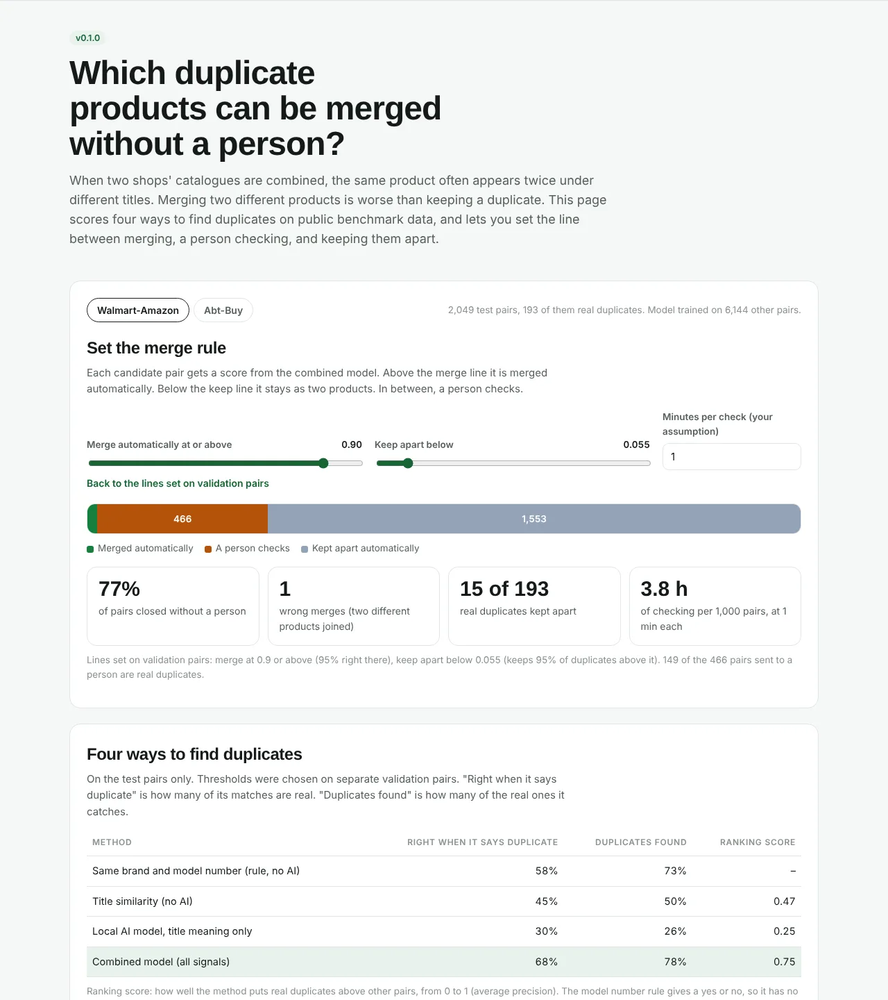

The question
Master data teams usually match products with a rule (same brand and model number) and send the rest to people. How much of that checking can a model remove, at what risk, and does a general AI model help?

Headline numbers
| Method | Right | Found |
|---|---|---|
| Model number rule | 58% | 73% |
| Title similarity | 45% | 50% |
| Local AI model | 30% | 26% |
| Combined model | 68% | 78% |
Walmart-Amazon test pairs. Right: share of its matches that are real. Found: share of real duplicates it catches.
Findings
The value is in closing pairs, not merging them
With lines set on validation pairs, 77% of Walmart-Amazon pairs (80% for Abt-Buy) close without a person, almost all by keeping them apart. Only 15% of duplicates are safe to merge automatically.
A general AI model knows similar, not same
On its own it was the weakest method, and removing it from the combined model barely changes the result. Two adapters of different lengths score 0.97 on its similarity.
Every signal has a cost
A partial model number match found duplicates like "p-fdu4" and "p-fdu4gbsv-ef", and caused the only wrong merge: a 6 ft and a 10 ft adapter.
Missing model numbers create the work
On Abt-Buy, 61% of the pairs sent to a person lack a model number, against 12% of all pairs. On Walmart-Amazon there is no such gap, so this holds for one benchmark only.
What I would do next
- Train a model on duplicate pairs and see how far it moves the merge line.
- Add the step that finds candidate pairs in a full catalogue.
- Have a catalogue specialist check and time 100 pairs from the review band.
Limits: two electronics benchmarks with pre-filtered candidate pairs. Licence of the underlying product data not stated.